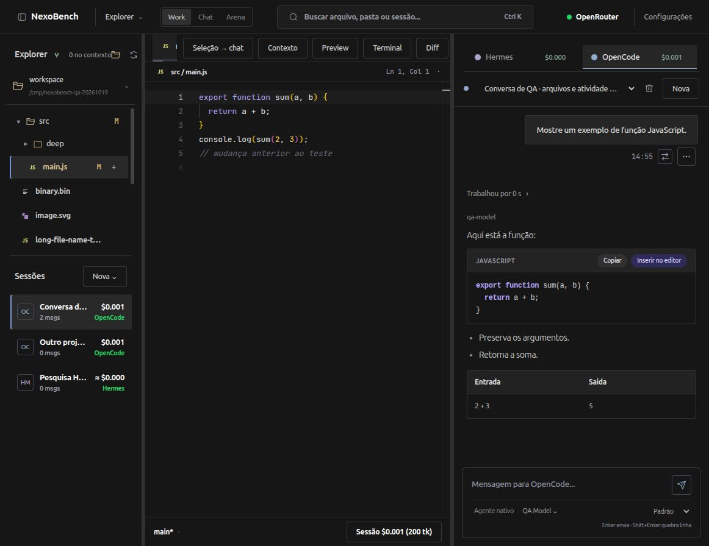

Editor Monaco, múltiplos agentes, terminal PTY, Git visual com checkpoints e transplante inteligente de contexto num único espaço de trabalho de alta performance. Sem simulações ou prompts vazios.
Navegue pelas telas reais do produto e veja cada recurso em funcionamento.
Árvore de arquivos com badges Git, Monaco Editor com abas dedicadas e conversa do agente lado a lado.

Fontes JetBrains Mono, Monaco Diff em tempo real contra Git HEAD e atalhos customizados.
Atalho Ctrl+Shift+L anexa linhas selecionadas ao chat com notação @arquivo:L1-L20.
Painéis ajustáveis por arraste ou teclado com persistência da geometria salva no host.
Desenvolvido com foco absoluto em produtividade, segurança de dados e fidelidade aos agentes.
Nada de simulações com prompts superficiais. Hermes roda via hermes serve (JSON-RPC/WebSocket) e OpenCode via REST/SSE oficial. Suas credenciais, ferramentas e memória permanecem sob seu controle.
Avalie respostas de dois agentes em tempo real frente a frente no mesmo projeto. Compare estratégias de raciocínio, saídas de ferramentas, consumo de tokens e decisões de arquitetura.
Transfira o trabalho de um agente para outro sem perda de contexto. O compilador gera um dossiê JSON estruturado e lê os arquivos essenciais atuais diretamente do disco para uma sessão nativa limpa.
Antes de qualquer turno de agente, um snapshot Git transacional é criado automaticamente. Se o agente cometer erros, desfaça tudo com confirmação e rollback de 1 clique.
Visualizadores de imagem, bancos SQLite e binários bloqueiam salvamentos textuais involuntários com HTTP 415. Watcher de disco previne perda de rascunhos com resolução de conflitos em 3 vias.
Até 8 terminais simultâneos com detecção automática de scripts do package.json e alvos do Makefile, acompanhados de painel Git visual completo com commits gerados por IA.
Design de software seguro, offline-first e com limites estritos de privilégio.
O Worket desacopla totalmente a camada de interface (renderizada em sandbox Electron sob a origem estável worket://app) do serviço local de execução. O serviço roda em porta dinâmica no loopback (127.0.0.1) e autentica requisições com chave de sessão efêmera gerada por processo.